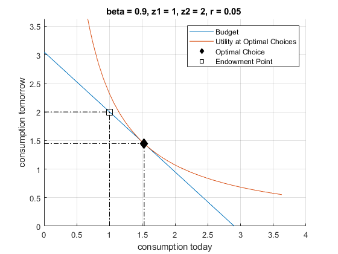

Chapter 9 Equality Constrained Optimization
9.1 Cost Minimization Decreasing Returns
Go back to fan’s CodeDynaAsset Package, Matlab Code Examples Repository (bookdown site), or Math for Econ with Matlab Repository (bookdown site).
We have already solved the firm’s maximization problem before given decreasing return to scale: Firm Maximization Problem with Capital and Labor (Decreasing Return to Scale)
Now, Let’s solve the firm’s problem with constraints. We can divide the profit maximization problem into two parts: 1, given a desired level of output, optimize over the optimal bundle of capital and labor; 2, given the result from the first part, optimize over the quantity of outputs. Here we focus on the first part, which can be thought of as a cost minimization or profit maximization problem.
9.1.1 Profit Maximization with Constraint
Let’s now write down the firm’s cost minimization problem with the appropriate constraints, using the Cobb-Douglas production function.
We can state the problem as a profit maximization problem:
\(\displaystyle \max_{K,L} \left\lbrace p\cdot AK^{\alpha } L^{\beta } -w\cdot L-r\cdot K\right\rbrace\)
such that: \(AK^{\alpha } L^{\beta } =q\), where \(q\) is some desired level of output
We can write down the lagrangian for this problem:
- \(\displaystyle \mathcal{L}=\left\lbrace p\cdot AK^{\alpha } L^{\beta } -w\cdot L-r\cdot K\right\rbrace -\mu \cdot (AK^{\alpha } L^{\beta } -q)\)
Now, the maximization problem has three choice variables, \(L,K,\mu\), where \(\mu\) is the lagrange multiplier.
Step 1: We can plug things into matlab’s symbolic toolbox
% These are the parameters
syms p A alpha beta w r q
% These are the choice variables
syms K L m
% The Lagrangian
lagrangian = (p*A*(K^alpha)*(L^beta) - w*L - r*K) - m*(A*(K^alpha)*(L^beta) - q)lagrangian = \(\displaystyle m\,{\left(q-A\,K^{\alpha } \,L^{\beta } \right)}-L\,w-K\,r+A\,K^{\alpha } \,L^{\beta } \,p\)
Step 2: As before, we can differentiate and obtain the gradient
d_lagrangian_K = diff(lagrangian, K);
d_lagrangian_L = diff(lagrangian, L);
d_lagrangian_m = diff(lagrangian, m);
GRADIENT = [d_lagrangian_K; d_lagrangian_L; d_lagrangian_m]GRADIENT = \(\displaystyle \left(\begin{array}{c} A\,K^{\alpha -1} \,L^{\beta } \,\alpha \,p-A\,K^{\alpha -1} \,L^{\beta } \,\alpha \,m-r\\ A\,K^{\alpha } \,L^{\beta -1} \,\beta \,p-A\,K^{\alpha } \,L^{\beta -1} \,\beta \,m-w\\ q-A\,K^{\alpha } \,L^{\beta } \end{array}\right)\)
Step 3: We can solve the problem. Let’s plug in some numbers (matlab in this case is unable to solve the problem with symbols):
% Given we have many symbols, type K, L, mu at the end to let matlab know what we are solving for
GRADIENT = subs(GRADIENT, {A,p,w,r,q,alpha,beta},{1,1,1,1,2,0.3,0.7});
solu = solve(GRADIENT(1)==0, GRADIENT(2)==0, GRADIENT(3)==0, K, L, m, 'Real', true);
soluK = double(solu.K);
soluL = double(solu.L);
soluM = double(solu.m);
disp(table(soluK, soluL, soluM));
soluK soluL soluM
______ ______ ________
1.1052 2.5788 -0.84202Step 4: What is the gradient at the optimal choices?
These are almost all exactly zero, which is what we expect, at the optimal choices, gradient should be 0. (SB P460)
gradientAtOptimum = double(subs(GRADIENT, {K,L,m}, {soluK, soluL, soluM}))
gradientAtOptimum = 3x1
1.0e+-15 *
-0.0156
0.0131
-0.1296Step 5: What is the hessian with respect to \(K,L\) (excluding \(\mu\)) at the optimal choices?
The second derivative condition is a little bit more complicated. You can see details on P460 of SB. In practice, we find the hessian only with respect to the real choices, not the multipliers, and we check if the resulting matrix is negative definite. If it is, we have found a local maximum.
HESSIAN = [diff(GRADIENT(1), K), diff(GRADIENT(2), K);...
diff(GRADIENT(1), L), diff(GRADIENT(2), L)];
HESSIANatOptimum = double(subs(HESSIAN, {K,L,m}, {soluK, soluL, soluM}))
HESSIANatOptimum = 2x2
-0.6334 0.2714
0.2714 -0.1163Is the Hessian Positive definite or negative definite? Let’s prove by trial and try some random vectors and use the \(xAx^{\prime }\) rule:
% An empty vector of zeros
xAxSave = zeros(1,100);
% Try 100 random xs and see what xAx equal to
for i=1:100
x = rand(1,2);
xAxSave(i) = x*HESSIANatOptimum*x';
end
% Let's see the first 5 elements:
xAxSave(1:5)
ans = 1x5
-0.0946 -0.2636 -0.3029 -0.1754 -0.0002
% OK the first 5 elements are negative, what about the rest?
% This command creates a new vector equal to FALSE (or 0) if above or equal 0, and TRUE (or 1) if below 0
is_negative = (xAxSave < 0);
is_negative(1:5)
ans = 1x5 logical array
1 1 1 1 1
% This counts how many are negative, should be 100, because this is a maximum
sum(is_negative)
ans = 1009.1.2 Cost Minimization with Constraint
We can actually re-write the problem as a cost minimization problem, because the first term in the objective function actually is always equal to \(q\), so that does not change regardless of the choices we make, so we can take it out, and say we are minimizing the cost. So we can re-write the problem as:
\(\displaystyle \min_{K,L} \left\lbrace w\cdot L+r\cdot K\right\rbrace\)
such that: \(AK^{\alpha } L^{\beta } =q\), where \(q\) is some desired level of output
We can write down the lagrangian for this problem:
- \(\displaystyle \mathcal{L}=\left\lbrace w\cdot L+r\cdot K\right\rbrace -\mu \cdot (AK^{\alpha } L^{\beta } -q)\)
This problem looks a little different, will we get the same solution? Yes, we can call the solutions below as the solutions to the COO’s problem.
9.1.3 Cost Minimization Problem–Optimal Capital Labor Choices
Taking derivative of \(L\), \(K\) and \(\mu\) with respect to the lagrangian, and setting first order conditions to \(0\), we can derive the optimal constrained capital and labor choices using the first order conditions above, they are (they would be the same if we derived them using the constrained profit maximization problem earlier):
\(\displaystyle K^* (w,r,q)={\left(\frac{q}{A}\right)}^{\frac{1}{\alpha +\beta }} \cdot {\left\lbrack \frac{\alpha }{\beta }\cdot \frac{w}{r}\right\rbrack }^{\frac{\beta }{\alpha +\beta }}\)
\(\displaystyle L^* (w,r,q)={\left(\frac{q}{A}\right)}^{\frac{1}{\alpha +\beta }} \cdot {\left\lbrack \frac{\alpha }{\beta }\cdot \frac{w}{r}\right\rbrack }^{\frac{-\alpha }{\alpha +\beta }}\)
If you divide the optimal constrained capital and labor choice equations above, you will find the optimal ratio is the same as what we derived in the unconstrained profit maximization problem: Firm Maximization Problem with Capital and Labor (Decreasing Return to Scale):
- \(\displaystyle \frac{K^* (r,w)}{L^* (r,w)}=\frac{w}{r}\cdot \frac{\alpha }{\beta }\)
This means the constraint does not change the optimal capital and labor ratio.
9.1.4 Cost Minimization Problem–Solving on Matlab
Step 1: We can plug things into matlab’s symbolic toolbox
clear all
% These are the parameters
syms p A alpha beta w r q
% These are the choice variables
syms K L m
% The Lagrangian
lagrangianMin = (w*L + r*K) - m*(A*(K^alpha)*(L^beta) - q)lagrangianMin = \(\displaystyle K\,r+L\,w+m\,{\left(q-A\,K^{\alpha } \,L^{\beta } \right)}\)
Step 2: As before, we can differentiate and obtain the gradient
d_lagrangianMin_K = diff(lagrangianMin, K);
d_lagrangianMin_L = diff(lagrangianMin, L);
d_lagrangianMin_m = diff(lagrangianMin, m);
GRADIENT = [d_lagrangianMin_K; d_lagrangianMin_L; d_lagrangianMin_m];
disp(GRADIENT);\(\displaystyle \left(\begin{array}{c} r-A\,K^{\alpha -1} \,L^{\beta } \,\alpha \,m\\ w-A\,K^{\alpha } \,L^{\beta -1} \,\beta \,m\\ q-A\,K^{\alpha } \,L^{\beta } \end{array}\right)\)
Step 3: We can solve the problem. Let’s plug in some numbers:
% Given we have many symbols, type K, L, mu at the end to let matlab know what we are solving for
GRADIENT = subs(GRADIENT, {A,p,w,r,q,alpha,beta},{1,1,1,1,2,0.3,0.7});
solu = solve(GRADIENT(1)==0, GRADIENT(2)==0, GRADIENT(3)==0, K, L, m, 'Real', true);
soluK = double(solu.K);
soluL = double(solu.L);
soluM = double(solu.m);
disp(table(soluK, soluL, soluM));
soluK soluL soluM
______ ______ _____
1.1052 2.5788 1.842Step 4: What is the gradient at the optimal choices?
These are almost all exactly zero, which is what we expect, at the optimal choices, gradient should be 0. (SB P460)
gradientAtOptimum = double(subs(GRADIENT, {K,L,m}, {soluK, soluL, soluM}))
gradientAtOptimum = 3x1
1.0e+-15 *
0.0156
-0.0131
-0.1296Step 5: What is the hessian with respect to \(K,L\) (excluding \(\mu\)) at the optimal choices?
The second derivative condition is a little bit more complicated. You can see details on P460 of SB. In practice, we find the hessian only with respect to the real choices, not the multipliers, and we check if the resulting matrix is positive definite. If it is, we have found a local minimum.
HESSIAN = [diff(GRADIENT(1), K), diff(GRADIENT(2), K);...
diff(GRADIENT(1), L), diff(GRADIENT(2), L)];
HESSIANatOptimum = double(subs(HESSIAN, {K,L,m}, {soluK, soluL, soluM}))
HESSIANatOptimum = 2x2
0.6334 -0.2714
-0.2714 0.1163
disp(HESSIANatOptimum);
0.6334 -0.2714
-0.2714 0.1163Is the Hessian Positive definite or negative definite? Let’s prove by trial and try some random vectors and use the \(xAx^{\prime }\) rule:
% An empty vector of zeros
xAxSave = zeros(1,100);
% Try 100 random xs and see what xAx equal to
for i=1:100
x = rand(1,2);
xAxSave(i) = x*HESSIANatOptimum*x';
end
% Let's see the first 5 elements:
disp(xAxSave(1:5));
0.0096 0.0280 0.0142 0.0384 0.0133
% OK the first 5 elements are positive, what about the rest?
% This command creates a new vector equal to FALSE (or 0) if below or equal 0, and TRUE (or 1) if above 0
isPositive = (xAxSave > 0);
disp(isPositive(1:5));
1 1 1 1 1
% This counts how many are postiive, should be 100, because this is a minimum
disp(sum(isPositive));
1009.2 Profit Maximization Constant Returns
Go back to fan’s CodeDynaAsset Package, Matlab Code Examples Repository (bookdown site), or Math for Econ with Matlab Repository (bookdown site).
We have already solved the firm’s maximization problem before given decreasing return to scale: Firm Maximization Problem with Capital and Labor (Decreasing Return to Scale). We have also solved the constrained profit maximization or cost minimization problem as well: Profit Maximize and Cost Minimize.
9.2.1 What is the Profit of the firm at Constrained Optimal Choices?
We derived the optimal constrained \(K\) and \(L\) equations here: Profit Maximize and Cost Minimize. The constrained profit equation given, \(p,q,w,r\), is:
- \(\displaystyle \Pi^{*\textrm{cost}\;\textrm{minimize}} (p,q,w,r)=p\cdot q-w\cdot L^* (w,r,q)-r\cdot K^* (w,r,q)\)
9.2.2 Profit Maximization and Marginal Cost
Imagine a firm is now trying to decide how much to produce, given our cost minimization problem, now rather than thinking about the firm directly choosing \(K\) and \(L\) to maximize profit, we can think of the marginal cost and marginal profit of the firm as \(q\) changes for the firm. If the firm can choose \(q\), it will want to choose the \(q\) that maximizes profit.
\[\max_q \left(p\cdot q-w\cdot L^* (w,r,q)-r\cdot K^* (w,r,q)\right)\]
The solution to this problem has to be the same as the problem we solved earlier where we directly chose \(K\) and \(L\), but now when formulated this way, we can think about the marginal cost and marginal revenue for the firm when \(q\) changes:
\(\displaystyle \textrm{MC(w,r)}=\frac{\partial (w\cdot L^* (w,r,q)+r\cdot K^* (w,r,q))}{\partial q}\)
\(\displaystyle \textrm{MR}(w,r)=p\)
Marginal revenue is of course constant at \(p\) and marginal cost is the derivative of the cost minimizing \(L\) and \(K\) choices multiplied by respective prices with respect to \(q\). Note we drived previously that these are functions of \(q\). Together with what we derived here: Firm Maximization Problem with Capital and Labor (Decreasing Return to Scale), the Cobb-Douglas Production function firm’s problem has given us on the return side: marginal productivity of capital, marginal productivity of labor, and marginal revenue. On the cost side: marginal cost of capital, marginal cost of labor, marginal cost of additional output (given cost minimization). These six marginal ideas are crucial to any firm’s problem, the specific functional forms differ depending on our production function specifications, but formulating how firms operate with these marginal ideas is at the heart of economic analysis.
9.2.3 Constant Return to Scale
In our previous exercise decreasing return to scale, Firm Maximization Problem with Capital and Labor (Decreasing Return to Scale), firms chose optimal \(K\) and \(L\) to maximize profit. We showed that the log linearized coefficient matrix is not full rank and invertible with constant return to scale, and hence firms did not have unconstrained profit maximizing \(K\) and \(L\) choices. Why is that?
Formulating the problem with marginal cost and marginal revenue helps us to understand what is going on.
It turns out that if \(\alpha +\beta =1\), that is, the firm has constant return to scale (CRS)–the elasticities of inputs sum up to 1–the cost minimizing optimal \(K\) and \(L\) choices are linear in terms of \(q\). The equations we derived in Profit Maximize and Cost Minimize, become, with CRS:
\(\displaystyle K^* (w,r,q)=q\cdot \left\lbrace \frac{1}{A}\cdot {\left\lbrack \frac{\alpha }{1-\alpha }\cdot \frac{w}{r}\right\rbrack }^{1-\alpha } \right\rbrace\)
\(\displaystyle L^* (w,r,q)=q\cdot \left\lbrace \frac{1}{A}\cdot {\left\lbrack \frac{\alpha }{1-\alpha }\cdot \frac{w}{r}\right\rbrack }^{-\alpha } \right\rbrace\)
These equations mean that the marginal cost of producing one more unit of \(q\), given CRS, is not impacted by \(q\), hence, it is a constant (determined by \(A,\alpha ,w,r\)):
- \(\displaystyle \textrm{MC(w,r)}=r\cdot \left\lbrace \frac{1}{A}\cdot {\left\lbrack \frac{\alpha }{1-\alpha }\cdot \frac{w}{r}\right\rbrack }^{1-\alpha } \right\rbrace +w\cdot \left\lbrace \frac{1}{A}\cdot {\left\lbrack \frac{\alpha }{1-\alpha }\cdot \frac{w}{r}\right\rbrack }^{-\alpha } \right\rbrace\)
With CRS, this means that if a firm makes \(q=1\), the cost would be \(\textrm{MC(w,r)}\), if the firm makes \(q=10\), the marginal cost for making the 10th good, given that the firm is cost minimizing by choosing optimal bundle of capital and labor, is just \(\textrm{MC(w,r)}\), and the total cost is also \(10\cdot \textrm{MC(w,r)}\).
9.2.4 When will the Firm produce, and what is its Profit?
With decreasing return to scale, for any prices, there will be profit maximizing \(K\) and \(L\) choices that lead to some profit maximizing output, as shown here: Firm Maximization Problem with Capital and Labor (Decreasing Return to Scale).
With CRS:
if \(p<\textrm{MC}(w,r)\), the firm does not produce, supply is perfectly inelastic
if \(p>\textrm{MC}(w,r)\), the firm produces infinity, every additional unit brings \(p-\textrm{MC(w,r)}\) unit of profit, so the firm would want to produce up to infinity
if \(p=\textrm{MC}(w,r)\). There is no profit, but there is also no loss. Households can also produce any amount, because there is nothing lost from producing.
So the firm makes a profit when: \(p>\textrm{MC}(w,r)\),
Given perfect competition, firms do not have pricing power, and take \(p\) as given, at equilibrium,\(p=\textrm{MC}(w,r)\). With CRS and perfect competition, firms will not make a profit. The fact that marginal cost is constant and profit is linear in \(q\) lead to this result. If there is monopolistic competition, there could be profits given CRS because firms would then be able to shift price as they shift quantity.
9.3 Intertemporal Utility Maximization
Go back to fan’s CodeDynaAsset Package, Matlab Code Examples Repository (bookdown site), or Math for Econ with Matlab Repository (bookdown site).
We previously solved for the unconstrained household’s savings and borrowing problem: unconstrained problem.
9.3.1 Utility Maximization over Consumption in Two Periods
Utility: \(U(c_1 ,c_2 )=\log (c_1 )+\beta \cdot \log (c_2 )\)
Budget Today: \(c_1 +b\le Z_1\)
Budget Tomorrow: \(c_2 \le b\cdot (1+r)+Z_2\)
\(c_1 >0\), \(c_2 >0\)
We have solved this problem as an unconstrained maximization problem by eliminating the consumption terms (unconstrained problem). If we keep the consumption terms but eliminatethe \(b\) term, then the problem is a constrained maximization problem with an income constraint:
- Budget Today and Tomorrow Together: \(c_2 =(Z_1 -c_1 )(1+r)+Z_2\)
Note that we have replaced the inequality symbol by an equality symbol. The income constraints are always going to bind because households will not waste income given log utility which is always increasing in consumption. This also means we don’t have to worry about the positive consumption constraints, because households will never consume at 0 since utility is not defined. We can rewrite the budget constraint as follows:
- Budget Today and Tomorrow Together: \(c_1 \cdot (1+r)+c_2 =Z_1 \cdot (1+r)+Z_2\)
Rewriting the problem as we do above has a nice interpretation. In this model, there is no production, endowment is fixed, and we allow the household to freely transfer resources from today to tomorrow and vice-versa. So in effect, we have two good that we are buying, \(c_1\) and \(c_2\). They seem to be the same good so they should have the same price, but they do not, because consumption in the first period is more expensive, since if you don’t consume in the first period, and save, you can earn interests and have higher \(c_2\). The price of \(c_1\) is hence \(1+r\). On the other hand, the price of \(c_2\) is just \(1\). The total resource available is on the right-hand-side of the equation. Your grandmother is transferring resources \(Z_1\) and \(Z_2\) to you, but the resources transfered in the first period is worth more because of the possibility of saving it. Again, we can bring the two periods together because the household is allowed to borrow and save. Given that we do not have uncertainty, our two period intertemporal problem has actually only one budget constraint. We can not do this for the problem with uncertainty.
The problem here is stated for \(c_1\) and \(c_2\), and is the intertemporal optimal choice problem. However, replace \(c_1\) by apples consumed today, \(c_2\) by bananas consumed today, and change the budget so that \(Z_1\) is the endowment from your grandmother who is an apple producer, and \(Z_2\) is the endowment from your other grandmother who is a banana producer. All solutions follow. We would replace \((1+r)\) by \(P_A\), the price of apples, and we can also add in \(P_B\) , the price of bananas. The key thing about building these models is that we can easily relabel variables and use the same framework to analyze different types of problems. For each type of problem, we could modify how the budget works, what is exactly in the utility function, but the structure of optimizing utility given budget is the same.
9.3.2 First Order Conditions of the Constrained Consumption Problem
Note again we already know the solution of this problem from: unconstrained problem. What we are doing here is to resolve the problem, but now directly for \(c_1\) and \(c_2\), rather than \(b\). But the results are the same because once you know \(b\) you know the consumption choices from the budget, and vice-versa. The solution method here is more complicated because we went from an one-choice problem in unconstrained problem to a three choice problem below. But the solution here is more general, allowing us to have addition constraints that can not be easily plugged directly into the utility function.
To solve the problem, we write down the Lagrangian, and solve a problem with three choices.
- \(\displaystyle \mathcal{L}=\log (c_1 )+\beta \cdot \log (c_2 )-\mu \left(c_1 \cdot (1+r)+c_2 -Z_1 \cdot (1+r)-Z_2 \right)\)
We have three partial derivatives of the lagrangian, and at the optimal choices, these are true:
\(\frac{\partial \mathcal{L}}{\partial c_1 }=0\), then, \(\frac{1}{c_1^{\ast } }=\mu (1+r)\)
\(\frac{\partial \mathcal{L}}{\partial c_2 }=0\), then, \(\frac{\beta }{c_2^{\ast } }=\mu\)
\(\frac{\partial \mathcal{L}}{\partial \mu }=0\), then, \(c_1^{\ast } \cdot (1+r)+c_2^{\ast } =Z_1 \cdot (1+r)+Z_2\)
9.3.3 Optimal Relative Allocations of Consumptions in the First and Second Periods
Bringing the firs two conditions together, we have:
\(\displaystyle \frac{\beta }{c_2^{\ast } }=\frac{1}{c_1^{\ast } \cdot (1+r)}\)
\(\displaystyle \frac{c_1^{\ast } }{c_2^{\ast } }=\frac{1}{\beta \cdot (1+r)}\)
\(\displaystyle c_1^{\ast } =\frac{1}{\beta \cdot (1+r)}\cdot c_2^{\ast }\)
Which tells us that the optimal ratio of consumption in the two periods is determined not by total resource available but by the interest rate \(r\) and preference for future \(\beta\). If the interest rate is higher, one will consume less today relative to tomorrow. If \(\beta\) is higher, which means we like the future more, one will also consume less today relative to tomorrow.
9.3.4 Optimal Consumption Choices
Using the third first order condition, and the optimal consumption ratio, we have:
\(\displaystyle \frac{1}{\beta \cdot (1+r)}\cdot c_2^{\ast } \cdot (1+r)+c_2^{\ast } =Z_1 \cdot (1+r)+Z_2\)
\(\displaystyle \frac{c_2^{\ast } }{\beta }+c_2^{\ast } =Z_1 \cdot (1+r)+Z_2\)
\(\displaystyle c_2^{\ast } =\frac{Z_1 \cdot (1+r)+Z_2 }{1+\frac{1}{\beta }}\)
Now we have the optimal consumption level. If endowments in either the first or second periods are higher, the household would consume more in the second period. If the interest rate is higher, the household would consume more in the second period, if \(\beta\) moves from 1 to 0, the numerator gets larger, and the optimal choice gets smaller: this means the more you dislike to future relative to today, the less you will consume in the future.
With the solution for \(c_2^{\ast }\), we also know:
\(\displaystyle c_1^{\ast } =\frac{1}{\beta \cdot (1+r)}\cdot \frac{Z_1 \cdot (1+r)+Z_2 }{1+\frac{1}{\beta }}\)
\(\displaystyle c_1^{\ast } =\frac{Z_1 +Z_2 \cdot \frac{1}{1+r}}{1+\beta }\)
This means similar to the optimal choice for \(c_2\), households will consume more if endowments are higher. Now, opposite from before, if interest rate is higher, the numerator gets smaller, and the household consume less in the first period. If \(\beta\) gets closer to 0, the household will consume more today as well.
The solutions here are Marshallian.
9.3.5 Indirect Utility
We have a special name for the utility function when it is evaluated at the optimal choices, it is called indirect utility:
- Indirect Utility function: \(U(c_1^{\ast } (r,Z_1 ,Z_2 ),c_2^{\ast } (r,Z_1 ,Z_2 ))=V^{\ast } (r,Z_1 ,Z_2 )\)
Given the solutions, we have:
\(\displaystyle V^{\ast } (r,Z_1 ,Z_2 )=\log \left(\frac{Z_1 +Z_2 \cdot \frac{1}{1+r}}{1+\beta }\right)+\beta \cdot \log \left(\frac{Z_1 \cdot (1+r)+Z_2 }{1+\frac{1}{\beta }}\right)\)
\(\displaystyle V^{\ast } (r,Z_1 ,Z_2 )=\log \left(\frac{Z_1 \cdot \left(1+r\right)+Z_2 }{\left(1+\beta \right)\cdot \left(1+r\right)}\right)+\beta \cdot \log \left(\frac{Z_1 \cdot (1+r)+Z_2 }{\left(1+\beta \right)\cdot \beta^{-1} }\right)\)
\(\displaystyle V^{\ast } (r,Z_1 ,Z_2 )=\left(1+\beta \right)\log \left(\frac{Z_1 \cdot \left(1+r\right)+Z_2 }{1+\beta }\right)+\log \left(\frac{\beta^{\beta } }{1+r}\right)\)
\(\displaystyle V^{\ast } (r,Z_1 ,Z_2 )=\log \left({\left(\frac{Z_1 \cdot \left(1+r\right)+Z_2 }{1+\beta }\right)}^{\left(1+\beta \right)} \cdot \left(\frac{\beta^{\beta } }{1+r}\right)\right)\)
9.3.6 Optimal Borrowing and Savings Choices
We can also now find the optimal borrowing and savings choice, which is, given \(c_1^{\ast } +b^{\ast } =Z_1\):
\(\displaystyle b^{\ast } =Z_1 -\frac{Z_1 +Z_2 \cdot \frac{1}{1+r}}{1+\beta }\)
\(\displaystyle b^{\ast } =\frac{\beta \cdot Z_1 -Z_2 \cdot \frac{1}{1+r}}{1+\beta }\)
You could also express the above expression as: \(b^{\ast } =\frac{\beta \cdot (1+r)\cdot Z_1 -Z_2 }{\left(1+\beta \right)\cdot \left(1+r\right)}\), which is what we obtained before from the unconstrained problem. Looking at the optimal borrowing and savings choice, we can see that sometimes the household wants to borrow, sometimes save, depending on the numerator, specifically:
\(b^{\ast } >0\) if \(\beta \cdot (1+r)>\frac{Z_2 }{Z_1 }\)
\(b^{\ast } \le 0\) if \(\beta \cdot (1+r)\le \frac{Z_2 }{Z_1 }\)
This tells us that whether a househodl borrows is dependent on the ratio of endowments: \(\frac{Z_2 }{Z_1 }\), and the discount rate multiplied by \(1+r\). The preference for future multiplied by the total return to savings must be higher than the ratio of endowment tomorrow versus today for households to want to save. In another word, suppose \(\beta \cdot (1+r)>1\), the household will be willing to save even if there is more endowment tomorrow than today.
9.3.7 Computational Solution to the Equality Constrained Problem
Matlab can solve the optimal choices for us. We can use diff and solve.
beta = 0.95;
z1 = 1;
z2 = 2;
r = 0.05;
syms r c1 c2 mu
% The Lagrangian
lagrangian = (log(c1) + beta*log(c2)) - mu*( c2 + (1+r)*c1 - z1*(1+r) - z2)lagrangian = \(\displaystyle \log \left(c_1 \right)+\frac{19\,\log \left(c_2 \right)}{20}-\mu \,{\left(c_2 -r+c_1 \,{\left(r+1\right)}-3\right)}\)
% Derivatives
d_lagrangian_c1 = diff(lagrangian, c1);
d_lagrangian_c2 = diff(lagrangian, c2);
d_lagrangian_mu = diff(lagrangian, mu);
GRADIENTmax = [d_lagrangian_c1; d_lagrangian_c2; d_lagrangian_mu]GRADIENTmax = \(\displaystyle \left(\begin{array}{c} \frac{1}{c_1 }-\mu \,{\left(r+1\right)}\\ \frac{19}{20\,c_2 }-\mu \\ r-c_2 -c_1 \,{\left(r+1\right)}+3 \end{array}\right)\)
% Given we have many symbols, type K, L, mu at the end to let matlab know what we are solving for
solu = solve(GRADIENTmax(1)==0, GRADIENTmax(2)==0, GRADIENTmax(3)==0, c1, c2, mu, 'Real', true);
soluC1 = (solu.c1)soluC1 = \(\displaystyle \frac{20\,{\left(r+3\right)}}{39\,{\left(r+1\right)}}\)
soluC2 = (solu.c2)soluC2 = \(\displaystyle \frac{19\,r}{39}+\frac{19}{13}\)
soluMu = (solu.mu)soluMu = \(\displaystyle \frac{39}{20\,{\left(r+3\right)}}\)
9.3.8 Fmincon Solution to the Constrained Problem
We can use fmincon again. What we are doing here is to explicitly solve the initially stated utility maximization problem, with both inequality constraints for consumption. This is not necessary because households would never choose consumption to be zero. Nevertheless, we can still use the fmincon set-up to solve the problem with all its constraints.
\(\displaystyle c_2 +(1+r)c_1 \le Z_1 (1+r)+Z_2\)
\(\displaystyle -c_1 <0\)
\(\displaystyle -c_2 <0\)
To useThis is a linear system, the equations above are equal to:
\(\displaystyle (1)c_2 +(1+r)c_1 \le Z_1 (1+r)+Z_2\)
\(\displaystyle (0)c_2 +(-1)c_2 <0\)
\(\displaystyle (-1)c_2 +(0)c_2 <0\)
Which mean that we have a \(A\) matrix and \(q\) vector:
- \(\displaystyle \left\lbrack \begin{array}{cc} 1 & 1+r\\ 0 & -1\\ -1 & 0 \end{array}\right\rbrack \cdot \left\lbrack \begin{array}{c} c_2 \\ c_1 \end{array}\right\rbrack \le \left\lbrack \begin{array}{c} Z_1 (1+r)+Z_2 \\ 0\\ 0 \end{array}\right\rbrack\)
Now we can set up the inputs for fmincon
% Parameters
beta = 0.90;
z1 = 1;
z2 = 2;
r = 0.05;
% Write down the objective function, we will define it as a function handle, negative utility for minimization
U_neg = @(x) -1*(log(x(2)) + beta*log(x(1)));
% Constraint derived above
A = [1,1+r;0,-1;-1,0];
q = [(z1*(1+r) + z2);0;0];Now call fminunc to solve
c_init = [0.5,0.5]; % starting value to search for optimal choice
% U_neg_num = matlabFunction(subs(U_neg, {beta, z1, z2, r}, {beta_num, z1_num, z2_num, r_num}));
[c_opti,U_neg_at_c_opti] = fmincon(U_neg, c_init, A, q);
Local minimum found that satisfies the constraints.
Optimization completed because the objective function is non-decreasing in
feasible directions, to within the value of the optimality tolerance,
and constraints are satisfied to within the value of the constraint tolerance.
<stopping criteria details>
c2Opti = c_opti(1);
c1Opti = c_opti(2);
UatCOpti = -1*U_neg_at_c_opti;
disp(table(c1Opti, c2Opti, UatCOpti));
c1Opti c2Opti UatCOpti
______ ______ ________
1.5288 1.4447 0.75563 Note that consumption in the two periods are similar. Households generally want to smooth consumption over time given their differential endowments in each period.
9.4 Intertemporal Expenditure Minimization
Go back to fan’s CodeDynaAsset Package, Matlab Code Examples Repository (bookdown site), or Math for Econ with Matlab Repository (bookdown site).
We previously solved for the unconstrained household’s savings and borrowing problem: unconstrained problem. And also the constrained optimization problem with asset choice.
9.4.1 Utility Maximization over Consumption in Two Periods
We solved the constrained utility maximization probem already.
Utility: \(U(c_1 ,c_2 )=\log (c_1 )+\beta \cdot \log (c_2 )\)
Budget Today and Tomorrow Together: \(c_1 \cdot (1+r)+c_2 =Z_1 \cdot (1+r)+Z_2\)
We found the indirect utility given optimal choices:
clear all
% previous solution, indirect uitlity
U_at_c_opti = 0.75563;
c1_opti = 1.5288;
c2_opti = 1.4447;
% parameters
beta = 0.90;
z1 = 1;
z2 = 2;
r = 0.05;9.4.2 The Expenditure Minimization Problem
We can represent the budget constraint and utility function (objective function) graphically. When we plug the optimal choices back into the utility function, we have the indirect utility.
- Indirect Utility function: \(V(c_1^* (r,Z_1 ,Z_2 ),c_2^* (r,Z_1 ,Z_2 ))=V(r,Z_1 ,Z_2 )\)
Note that the indirect utility is a function of the price \(r\) that households face, and the resources the have available–their income–\(Z_1 ,Z_2\). We can also write:
- \(\displaystyle V(r,Z_1 ,Z_2 )=\max_{c_1 ,c_2 } U(c_1 ,c_2 ;r,Z_1 ,Z_2 )\)
Similar to the firm’s profit maximization and cost minimization problems, which gave us similar optimality conditions, we can solve the household’s expenditure minimization problem given \(V^*\), and the optimal choices will be the same choices that gave us \(V^*\) initially. Specifically:
\[\min_{c1,c2} \left(c_2 +(1+r)c_1 \right)\]
- such that:
\[\log (c_1 )+\beta \log (c_2 )=V^{\ast } (r,Z_1 ,Z_2 )\]
9.4.3 First Order Conditions of the Constrained Consumption Problem
Note again we already know the solution of this problem from: unconstrained problem. What we are doing here is to resolve the problem, but now directly for \(c_1\) and \(c_2\), rather than \(b\). But the results are the same because once you know \(b\) you know the consumption choices from the budget, and vice-versa. The solution method here is more complicated because we went from an one-choice problem in unconstrained problem to a three choice problem below. But the solution here is more general, allowing us to have addition constraints that can not be easily plugged directly into the utility function.
To solve the problem, we write down the Lagrangian, and solve a problem with three choices.
- \(\displaystyle \mathcal{L}=c_2 +(1+r)c_1 -\mu \left(\log (c_1 )+\beta \log (c_2 )-V^* (r)\right)\)
We have three partial derivatives of the lagrangian, and at the optimal choices, these are true:
\(\frac{\partial \mathcal{L}}{\partial c_1 }=0\), then, \(\frac{\mu }{c_1^{\ast } }=(1+r)\)
\(\frac{\partial \mathcal{L}}{\partial c_2 }=0\), then, \(\frac{\beta \cdot \mu }{c_2^{\ast } }=1\)
\(\frac{\partial \mathcal{L}}{\partial \mu }=0\), then, \(\log (c_1^{\ast } )+\beta \log (c_2^{\ast } )=V^{\ast } (r,Z_1 ,Z_2 )\)
9.4.4 Optimal Relative Allocations of Consumptions in the First and Second Periods
Bringing the firs two conditions together, we have:
\(\displaystyle \frac{\beta }{c_2^{\ast } }=\frac{1}{c_1^{\ast } \cdot (1+r)}\)
\(\displaystyle \frac{c_1^{\ast } }{c_2^{\ast } }=\frac{1}{\beta \cdot (1+r)}\)
\(\displaystyle c_1^{\ast } =\frac{1}{\beta \cdot (1+r)}\cdot c_2^{\ast }\)
This is the same as for the constrained utility maximization problem: constrained utility maximization probem.
9.4.5 Optimal Expenditure Minimization Consumption Choices
Using the third first order condition, and the optimal consumption ratio, we have:
\(\displaystyle \log (\frac{1}{\beta \cdot (1+r)}\cdot c_2^{\ast } )+\beta \log (c_2^{\ast } )=V^{\ast } (r,Z_1 ,Z_2 )\)
\(\displaystyle c_2^{\ast } =\exp \left(\left(V^{\ast } (r,Z_1 ,Z_2 )+\log (\beta \cdot (1+r))\right)\cdot \frac{1}{1+\beta }\right)\)
Subsequently, we can obtain optimal expenditure minimization \(c_1\) and \(b\).
The solutions here are Hicksian, these are the dual version of the Marshallian problem from: constrained utility maximization probem
9.4.6 Compuational Solution
Solving the problem with the same parameters as before given \(V^*\), we will get the same solutions that we got above:
syms c1 c2 lambda
% The Lagrangian given U_at_c_opti found earlier
lagrangian = (c2 + (1+r)*c1 - lambda*( log(c1) + beta*log(c2) - U_at_c_opti));
% Derivatives
d_lagrangian_c1 = diff(lagrangian, c1);
d_lagrangian_c2 = diff(lagrangian, c2);
d_lagrangian_mu = diff(lagrangian, lambda);
GRADIENTmin = [d_lagrangian_c1; d_lagrangian_c2; d_lagrangian_mu]GRADIENTmin = \(\displaystyle \left(\begin{array}{c} \frac{21}{20}-\frac{\lambda }{c_1 }\\ 1-\frac{9\,\lambda }{10\,c_2 }\\ \frac{75563}{100000}-\frac{9\,\log \left(c_2 \right)}{10}-\log \left(c_1 \right) \end{array}\right)\)
solu_min = solve(GRADIENTmin(1)==0, GRADIENTmin(2)==0, GRADIENTmin(3)==0, c1, c2, lambda, 'Real', true);
soluMinC1 = double(solu_min.c1);
soluMinC2 = double(solu_min.c2);
soluMinLambda = double(solu_min.lambda);
disp(table(soluMinC1, soluMinC2, soluMinLambda));
soluMinC1 soluMinC2 soluMinLambda
_________ _________ _____________
1.5288 1.4447 1.6053 9.4.7 Graphical Representation
At a particular \(r,Z_1 ,Z_2\), we have a specific numerical value for \(V^*\). We have different bundles of \(c_1 ,c_2\) that can all achieve this particular utility level \(V^*\). We can draw these and see visually where the optimal choices are. So we have two equations that we can draw:
Budget: \((1)c_2 +(1+r)c_1 \le Z_1 (1+r)+Z_2\)
Indifference at \(V^*\): \(V^* =\log (c_1 )+\beta \log (c_2 )\), which is: \(c_2 =\exp \left(\frac{V^* -\log (c_1 )}{\beta }\right)\)
Think of \(c_1\) as the x-axis variable, and \(c_2\) as the y-axis variable, we can plot them together
% Numbers defined before, and U_at_c_opti found before
syms c1
% The Budget Line
f_budget = z1*(1+r) + z2 - (1+r)*c1;
% Indifference at V*
f_indiff = exp((U_at_c_opti-log(c1))/(beta));
% Graph
figure();
hold on;
% Main Lines
fplot(f_budget, [0, (z1 + z2/(1+r))*1.25]);
fplot(f_indiff, [0, (z1 + z2/(1+r))*1.25]);
% Endowment Point
scatter(c1_opti, c2_opti, 100, 'k', 'filled', 'd');
plot(linspace(0,c1_opti,10),ones(10,1) * c2_opti, 'k-.', 'HandleVisibility','off');
plot(ones(10,1) * c1_opti, linspace(0,c2_opti,10), 'k-.', 'HandleVisibility','off');
% Optimal Choices Point
scatter(z1, z2, 100, 'k', 's');
plot(linspace(0,z1,10),ones(10,1) * z2, 'k-.', 'HandleVisibility','off');
plot(ones(10,1) * z1, linspace(0,z2,10), 'k-.', 'HandleVisibility','off');
% Labeling
ylim([0, (z1 + z2/(1+r))*1.25])
title(['beta = ' num2str(beta) ', z1 = ' num2str(z1) ', z2 = ' num2str(z2) ', r = ' num2str(r) ' '])
xlabel('consumption today');
ylabel('consumption tomorrow');
legend({'Budget', 'Utility at Optimal Choices', 'Optimal Choice', 'Endowment Point'})
grid on;
9.5 Intertemporal Income and Substitution Effects
Go back to fan’s CodeDynaAsset Package, Matlab Code Examples Repository (bookdown site), or Math for Econ with Matlab Repository (bookdown site).
We solved previously the Marshallian Utility Maximization Problem and the Hicksian Expenditure Minimization Problem, now we solve for the effect of a change in price (relative price) on optimal choices. We decompose the effects to two ingredients, the income and substitution effects. This is the Slutsky Decomposition. The key point here is that when price changes, that has changes both the relative costs but also changes income directly and indirectly.
9.5.1 Utility Maximization over Consumption in Two Periods
We solved the constrained utility maximization probem already.
Utility: \(U(c_1 ,c_2 )=\log (c_1 )+\beta \cdot \log (c_2 )\)
Budget Today and Tomorrow Together: \(c_1 \cdot (1+r)+c_2 =Z_1 \cdot (1+r)+Z_2\)
9.5.2 Solving for the Substitution Effect
There are different definitions of the substitution effect. One way of thinking about it is that given that the change in \(r\), what would the consumption bundle be at the new prices that would give the household the same level of utility as before. To find this point, we can solve for the household’s Hicksian Expenditure Minimization Problem. But unlike before, we have to worry about two different prices, in our case two different interest rates. Our objective function uses the second interest rate, the new interest rate that we have shifted to. But the targeted utility level we are trying to achieve is based on the previous, existing interest rate.
Specifically, the difference between the solution to the problem below and the optimal choices from the Marshallian problem given the initial prices \(r_1\) represents the substitution effect. The difference betwen the solution to the problem below and the Marshallian problem given the new prices \(r_2\) represent the income effects:
- Expenditure we want to minimize given new price \(r_2\):
\[\min_{c1,c2} \left(c_2 +(1+r_2 )c_1 \right)\]
The constraint is however, a function or \(r_1\), where \(r_1\) determines the \(V^*\), we are shifting to some point along the blue dashed line:
- Constraint we need to satisfy given Indirect Utility with old price \(r_1\):
\[\log (c_1 )+\beta \log (c_2 )=V^* (r_1 )\]
The problem here is solves in terms of consumption in two periods, we can relabel consumptions in the first and second periods as consumption of Apples and Bananas in the same period. The solution method is the same. Our first order conditions are the same as when we did the Hicksian Expenditure Minimization Problem problem. The only difference is what the \(V^{\ast }\) is based on. Following our algebra before, the optimal choice from this problem above is:
\[c_2^{\ast ,\textrm{substitution}} =\exp \left(\left(V^{\ast } (r_1 ,Z_1 ,Z_2 )+\log (\beta \cdot (1+r_2 ))\right)\cdot \frac{1}{1+\beta }\right)\]
Then we can find the \(c_1^{\ast }\) choice as well. Below we show the results graphically
9.5.3 Optimal Consumption Choices with Different Interest Rates
In the following sections, we show the substitution and income effects graphically. First, we already solved the constrained utility maximization probem already, and derived the analytical solutions. Below, we solve for the numerical values directly using matlab. We could have also used our analytical solutions, and plugged in values. Sometimes, if it is possible for matlab to analytically solve an equation for you, it is perhaps better to rely on matlab to take derivatives and solve. This way, we reduce potential errors in our algebraic derivations. We often do like to derive the solution analytically by hand as we did in constrained utility maximization probem to gain more insights about how parameters impact optimal choices.
Below is our numerical solutions based on matlab’s analytical solution combined with numerical values. We provide two interest rates below, and graphically show the optimal consumption choices with corresponding budgets and indifference curves at for each interest rate.
beta = 0.90;
z1 = 0.5;
z2 = 2.5;
syms r c1 c2 mu
% The Lagrangian
lagrangian = (log(c1) + beta*log(c2)) - mu*( c2 + (1+r)*c1 - z1*(1+r) - z2);
% Given we have many symbols, type K, L, mu at the end to let matlab know what we are solving for
solu = solve(diff(lagrangian, c1)==0, diff(lagrangian, c2)==0, diff(lagrangian, mu)==0, c1, c2, mu, 'Real', true);
solu_c1 = (solu.c1);
solu_c2 = (solu.c2);At two different interest rate levels, the optimal choices and utility at optimal choices are of course different, we can plot both out graphically following what we did before. Note that changing \(r\) directly changes both left hand side and right hand side of budget. If we were considering just apples and bananas, unless you sell apples or bananas, the price change would only impact the left-hand-side of the budget (which still lead to both income and substitution effects).
% Get Optimal Choices and Utility at Optimal Choices
syms c1
r1 = 0.05;
r2 = 1;
c1star_r1 = double(subs(solu_c1, {r}, {r1}));
c1star_r2 = double(subs(solu_c1, {r}, {r2}));
c2star_r1 = double(subs(solu_c2, {r}, {r1}));
c2star_r2 = double(subs(solu_c2, {r}, {r2}));
disp(table(c1star_r1, c1star_r2, c2star_r1, c2star_r2));
c1star_r1 c1star_r2 c2star_r1 c2star_r2
_________ _________ _________ _________
1.5163 0.92105 1.4329 1.6579
U_at_c_opti_r1 = log(c1star_r1) + beta*log(c2star_r1)
U_at_c_opti_r1 = 0.7400
U_at_c_opti_r2 = log(c1star_r2) + beta*log(c2star_r2)
U_at_c_opti_r2 = 0.3728
% The Budget Line at r1
f_budget_r1 = z1*(1+r1) + z2 - (1+r1)*c1;
% Indifference at V* at r1
f_indiff_r1 = exp((U_at_c_opti_r1-log(c1))/(beta));
% The Budget Line at r2
f_budget_r2 = z1*(1+r2) + z2 - (1+r2)*c1;
% Indifference at V* at r2
f_indiff_r2 = exp((U_at_c_opti_r2-log(c1))/(beta));
% Graph
figure();
hold on;
% r1
fplot(f_budget_r1, [0, (z1 + z2/(1+r2))*2], 'b');
fplot(f_indiff_r1, [0, (z1 + z2/(1+r2))*2], 'b--');
% r2
fplot(f_budget_r2, [0, (z1 + z2/(1+r2))*2], 'r');
fplot(f_indiff_r2, [0, (z1 + z2/(1+r2))*2], 'r--');
% optmial points
scatter(c1star_r1, c2star_r1, 100, 'b', 'filled');
scatter(c1star_r2, c2star_r2, 100, 'r', 'filled');
% Endowment Point
scatter(z1, z2, 100, 'k', 'filled', 'd');
plot(linspace(0,z1,10),ones(10,1) * z2, 'k-.', 'HandleVisibility','off');
plot(ones(10,1) * z1, linspace(0,z2,10), 'k-.', 'HandleVisibility','off');
% legends
ylim([0, (z1 + z2/(1+r2))*2])
xlabel('consumption today');
ylabel('consumption tomorrow');
legend({'Budget R1', ['Utility at Optimal Choices R1=' num2str(r1)],...
'Budget R2', ['Utility at Optimal Choices R2=' num2str(r2)],...
'Optimal Choices ar R1', 'Optimal Choices at R2', 'Endowment'})
title({['r increases from ' num2str(r1) ' to ' num2str(r2)],...
['this tilts the budget line clock-wise (c today more expensive)'],...
['this also shifts the budget line out (z today worth more)']})
grid on;9.5.4 Graphical Illustration of the Income and Substitution Effect
Based on our solution method above, we can solve for the substitution effects and income effects. The solid red dot below is the new point we added based on the minimization problem earlier.
syms c1 c2 lambda
% The Lagrangian given U_at_c_opti found earlier
lagrangian = (c2 + (1+r2)*c1 - lambda*( log(c1) + beta*log(c2) - U_at_c_opti_r1));
% Solve
solu_min_substitution = solve(diff(lagrangian, c1)==0, diff(lagrangian, c2)==0, diff(lagrangian, lambda)==0, c1, c2, lambda, 'Real', true);
solu_min_substitution_c1 = double(solu_min_substitution.c1);
solu_min_substitution_c2 = double(solu_min_substitution.c2);
total_cost = solu_min_substitution_c2 + (1+r2)*solu_min_substitution_c1;
disp(table(solu_min_substitution_c1, solu_min_substitution_c2, total_cost));
solu_min_substitution_c1 solu_min_substitution_c2 total_cost
________________________ ________________________ __________
1.1174 2.0114 4.2463 We have found the bundle along the dashed blue line where the tangent line to the dashed blue line has the same slope as the solid red line. We can now graph this out:
% Same as before: The Budget Line at r1
f_budget_r1 = z1*(1+r1) + z2 - (1+r1)*c1;
% Same as before: Indifference at V* at r1
f_indiff_r1 = exp((U_at_c_opti_r1-log(c1))/(beta));
% Rather than plugging in z1*(1+r2) + z2, now we are pushing the red budget line out
% z1_substi*(1+r2) + z2_substi = solu_min_substitution_c2 + (1+r2)*solu_min_substitution_c1
f_budget_substitution = total_cost - (1+r2)*c1;
% Graph
figure();
hold on;
% Substitution Effect
fplot(f_budget_substitution, [0, (z1 + z2/(1+r2))*2], 'r');
scatter(solu_min_substitution_c1, solu_min_substitution_c2, 100, 'r', 'filled');
% r1
fplot(f_indiff_r1, [0, (z1 + z2/(1+r2))*2], 'b-.');
fplot(f_budget_r1, [0, (z1 + z2/(1+r2))*2], 'b-.');
fplot(f_budget_r2, [0, (z1 + z2/(1+r2))*2], 'r-.');
fplot(f_indiff_r2, [0, (z1 + z2/(1+r2))*2], 'r-.');
% legends
ylim([0, (z1 + z2/(1+r2))*2])
% optmial points
scatter(c1star_r1, c2star_r1, 100, 'b');
scatter(c1star_r2, c2star_r2, 100, 'r');
% Endowment Point
scatter(z1, z2, 100, 'k', 'filled', 'd');
plot(linspace(0,z1,10),ones(10,1) * z2, 'k-.', 'HandleVisibility','off');
plot(ones(10,1) * z1, linspace(0,z2,10), 'k-.', 'HandleVisibility','off');
% legends
ylim([0, (z1 + z2/(1+r2))*2])
xlabel('consumption today');
ylabel('consumption tomorrow');
legend({'Substitution Effect', ['Bundle with R2=' num2str(r2) ' and V*(R1=' num2str(r1) ')'] ...
'Budget R1', ['Utility at Optimal Choices R1=' num2str(r1)],...
'Budget R2', ['Utility at Optimal Choices R2=' num2str(r2)],...
'Optimal Choices ar R1', 'Optimal Choices at R2', 'Endowment'})
title({['Substitution Effect when r increases from ' num2str(r1) ' to ' num2str(r2)]...
['Blue Hollow Circle to Red Solid Circle = Substitution Effect']...
['Red Solid Circle to Red Hollow Circle = Income Effect']});
grid on;In the graph above, the shift between the empty blue circle and the red solid circle is the substitution effect. Remaining changes between empty blue circle and red blue circle are due to income effects. Note that in this problem, the substitution effect–given higher interest rate for a household that would like to borrow due to low endowment today–is to reduce consumption today and increasing consumption tomorrow. The income effect, however, is moving both consumption today and tomorrow down.
It might be puzzling whey the income effect is shifting both \(c_1\) and \(c_2\) lower. This is because even though the higher interest rate increases the right hand side of the budget constraint, that increase in income is small relative to the effective loss in income due to the dramatically higher cost of borrowing. In another word, the dollar level of the household is higher due to higher interest rate, but the purchasing power of that wealth is significantly lower due to higher interest rate, so the higher dollar level is actually worth less in consumption units. There is a decrease in the household’s ability to purchase consumption in both periods given the increase in interest rate. Given that the household was borrowing before (notice where the endowment point is), the household is hurt by the increase in interest rate. The household now still borrows, but borrows less.
This type of problem works in the Apples and Bananas case as well. Suppose you have endowments in Apples and Bananas, when the price of apple increases, your wealth directly increases from selling your apples endowments at higher prices, but you also have to pay higher cost when you buy apple which leads to an indirect income effect and substitution effect. In general, when our endowments are in terms of goods, changing price tilts the budget constraint but the constraint still has to pass through the black endowment point. If we have just some total endowment in cash, and not in goods, meaning our endowments are not related to prices, then our budget line, given price change would tilt at the y and x intercepts.